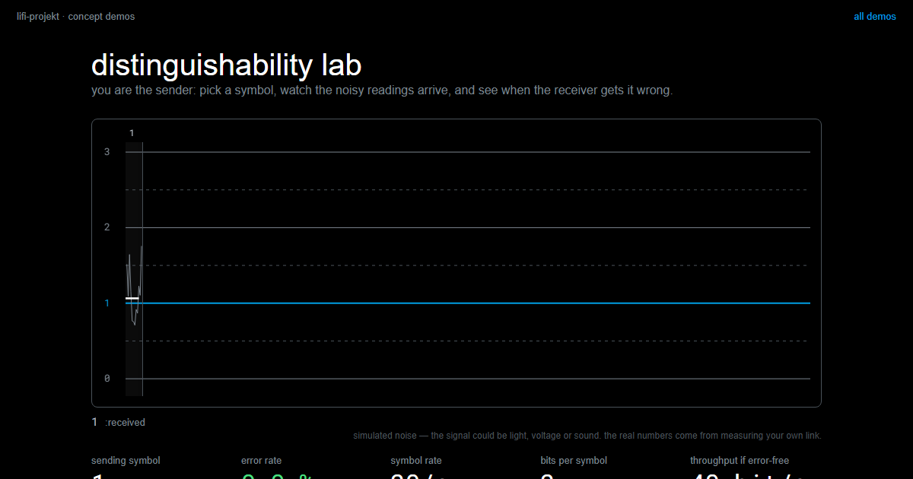

Signal and Noise
Summary
Measure the same thing twice and you get two different numbers. That scatter is not a fault, it is a property of every measurement, and it decides how many symbols your link can carry. Two teams with identical hardware end up with alphabets of 16 and of 4, and the difference is not in their code: it is the ratio between the distance separating two symbols and the spread of the readings around each one. You can improve that ratio, but almost every way of doing so is paid for in bits per symbol or in symbols per second. Three of them are free, and that is why you are allowed to build optics.
In this chapter, we address the following questions:
- Why does the same measurement never give exactly the same result?
- When are two states safely distinguishable, and why is “different means” not enough?
- How many symbols fit into your link, and can you work that out before trying?
- Why do faster readings scatter more?
- What does each countermeasure against noise cost you?
You need this concept for Challenge 1, where the size of your alphabet is the score. How to measure honestly, with a control measurement and one variable at a time, is the neighbouring concept Measurement and Experiments; here it is about what those measurements tell you about your link.
Explanation
A lighthouse in fog is a strange sight. The lamp burns exactly as brightly as it did on a clear night, and yet the beam dies after a few metres. Nothing has happened to the signal. Something has happened to everything else.
That is the situation you are in after the first competition. Every team had the same LED, the same sensor and the same room, every sender was equally bright, and still one team gets 16 colours through and another gets 4. It is worth saying plainly what does not explain that gap: the quality of the code. What explains it is scatter.
Ten readings of one colour
Point your sensor at one colour and read it ten times without changing anything at all.
{kind=link}
You get ten different numbers. This surprises people, because a computer is the one machine that reliably gives the same output for the same input. But the sensor never gets the same input twice: the light flickers, the electronics have their own hiss, someone walks past the window. This variation is called noise, and every measuring instrument in the world has it.
Notice that a single reading tells you almost nothing on its own. The reading 220 could be that colour, or it could be a neighbouring colour having a bad moment. Only the whole set of ten tells you where the colour actually sits and how far it wanders.
The same signal, measured differently
There is a way to make the numbers calmer, and you already have it: measure for longer and average what arrives.
{kind=link}
The top strip is what the sensor actually delivers: far too restless to decide anything from a single instant. Each strip below averages the same signal over a longer window, and the bars settle closer and closer to the true level.
Look at the right-hand edge, though. The same stretch of time holds 288 raw readings, 72 averaged ones, 24, and finally 9. Calmness is not free: you pay for it in readings per second, and readings per second is exactly what your transmission speed is made of. That is the first price tag of this chapter, and it will not be the last.
Two symbols, two clouds
Now put two symbols on the same scale. Each one is not a single value but a cloud of values, and the width of that cloud is the noise you just measured.
{kind=link}
The picture makes a point that is easy to say and easy to forget: neither number decides on its own. The distance between two symbols means nothing without the width of the clouds, and the width means nothing without the distance.
The ratio is what counts
So the quantity that governs everything in this chapter is a ratio: the distance \(d\) between two symbols, divided by the spread \(s\) of the readings around each one.
{kind=link}
Your alphabet size measures nothing but this ratio, which is why it explains the ranking on the wall.
And this gives a sharper definition of a phrase we have been using loosely. Safely distinguishable does not mean the means are different. It means the clouds do not overlap, not even at their outermost values. A single reading that strays across the boundary is a wrong symbol, and one wrong symbol in fifty runs is enough to cost you an alphabet size. If your notes for a colour contain only its mean, they do not yet tell you whether that colour is usable.
How many symbols fit?
Once you think in bands rather than in points, the question “how many colours can we use?” stops being a matter of trying things out and becomes arithmetic.
{kind=link}
Measure the usable range of your link, from the darkest to the brightest value you can produce reliably. Measure the width of one cloud. Divide, and you have the number of symbols that fit.
An example to follow along with. Your range runs from 40 to 840, so 800 units. Every colour scatters around its mean by ±25, so its band is 50 wide, not 25: the cloud reaches out in both directions. And \(800 / 50 = 16\). That is where a 16-symbol alphabet comes from, and doing this calculation before you start trying colours saves you half a session.
You can get a feel for the whole trade in the simulator, where the alphabet size, the measurement window and the speed are all knobs, and the error rate runs along with them:
distinguishability labsend symbols over a noisy channel, oscilloscope style: grow the alphabet, tune the window, inject a disturbance, and watch the error rate fight the throughput.LiFi Project · concept demos
{kind=link}
Both roads lead to the same wall
There are two ways to get more out of your link, and students almost always want both at once.
{kind=link}
More symbols narrows the bands. Faster symbols widens the clouds. Both spend the same safety margin, and you only have one of it. That is the wall Challenge 2 begins at, and the way through it is not a cleverer program but a number you have measured yourself.
One last thing, and it is the reason this module is not a programming course. Everything in this chapter is a property of your link: your room, your distance, your ambient light. Calibrate by the window and the acceptance test in the dark will not match. No amount of reading, and no language model, has access to that. The channel is the only authority in the room.
Slides
The slides for this concept, right here. Page through them with the buttons in the top right corner, or click into the slides and use the arrow keys. The other buttons give you full screen, the slides in a new tab, and the deck as a PDF.
Practice questions
Try questions in the exam format here, with the answer and its reasoning shown right away.
Further reading
- Charles Petzold: Code. The Hidden Language of Computer Hardware and Software. Microsoft Press, 2nd edition 2022. Chapter 5 makes this chapter’s argument from the other side: two states are the cheapest thing to build reliably, precisely because the gap between them is so wide that no amount of scatter closes it.
- Claude E. Shannon: Communication in the Presence of Noise. Proceedings of the IRE 37(1), 1949. https://doi.org/10.1109/JRPROC.1949.232969. The paper that made this a subject. Heavy going, but the first two pages are readable and the pictures of signal clouds in it are the ancestors of the ones above.
- Philip Bevington and Keith Robinson: Data Reduction and Error Analysis for the Physical Sciences. McGraw-Hill, 3rd edition 2002. If you want to know how to state a spread properly rather than by eye, this is the standard reference.